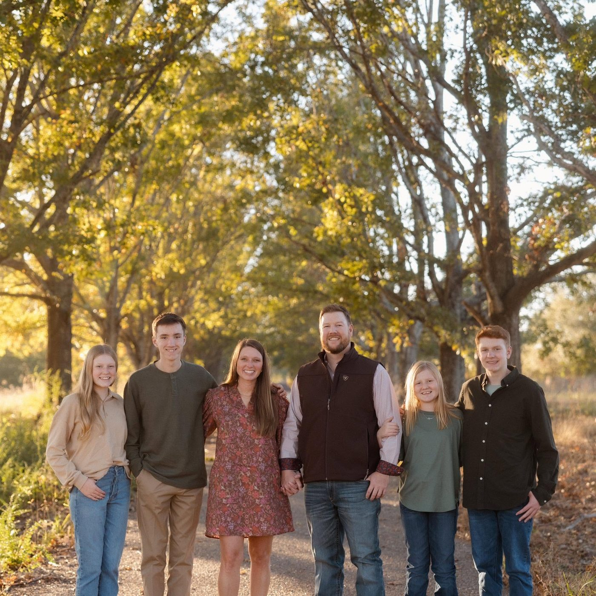
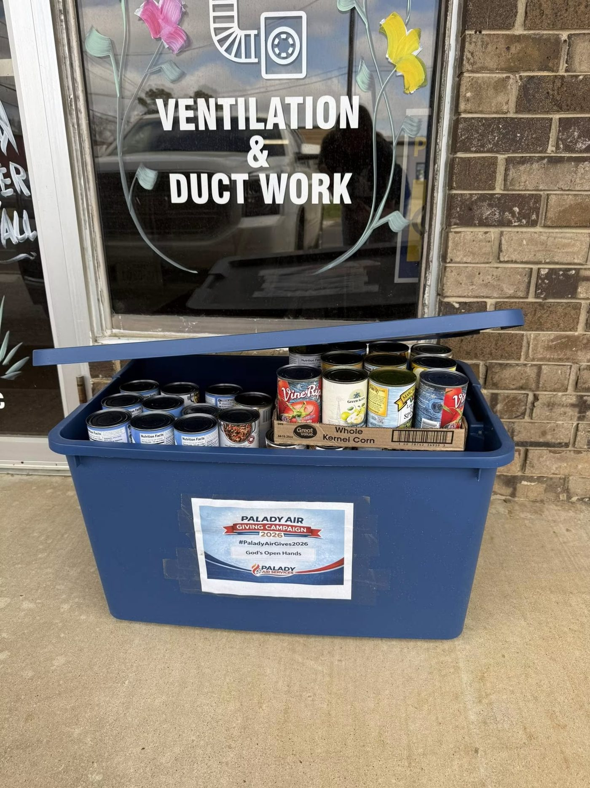
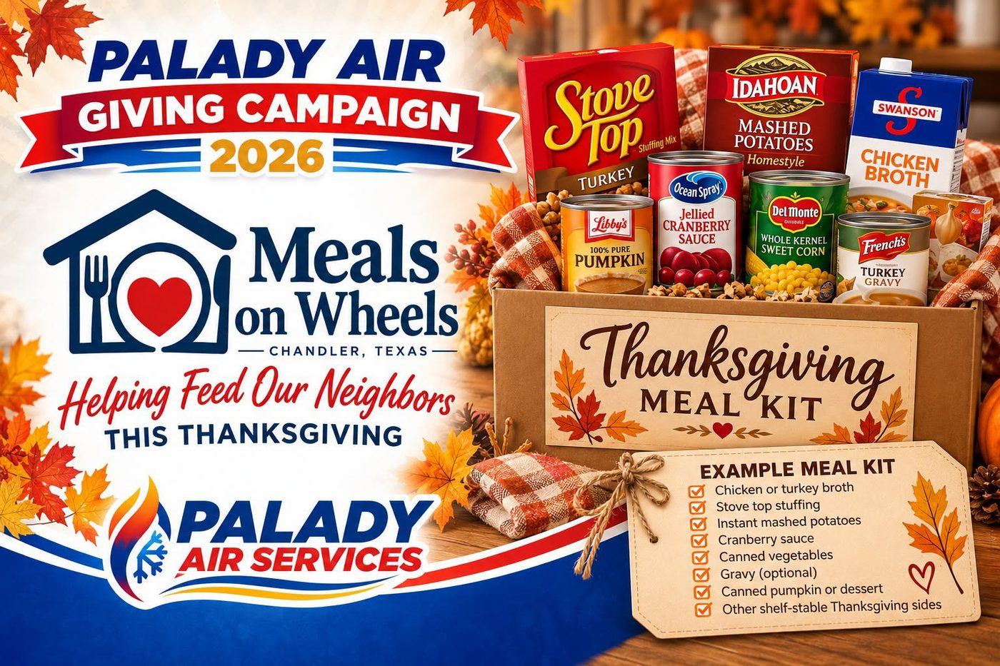

Neighbor Story · Chandler
A Leap of Faith: Palady Air Grows a Family Business to Bless More Families
Michael and Jessica Carter are growing the family HVAC business her parents began, trusting the Lord with the next step, and inviting their neighbors to give with them.

Palady is Jessica Carter's dad's last name, and Palady Air Services was once her parents' business. Today Jessica and her husband, Michael, are growing that family shop, and this year they took a leap of faith. They are trusting the Lord with the next step so they can bless more families in Chandler, Brownsboro and the rest of East Texas.
Rooted Here
Jessica has lived here her whole life. Michael moved to the area in junior high. The two married in 2006, so they'll mark 20 years together this December, and they have four kids. They live in Brownsboro and rented in Chandler for a while as they built their home.
Michael and Jessica took over her parents' business in 2017. Back then her dad was running it alone and getting older. Michael had been a top salesman at his job, and he had a choice: relocate with his company, or take on the family business. He chose to stay, and since then the couple has grown the business "to what it is today." Palady Air is family-owned and operated, with more than 42 years of experience serving Chandler, Athens, Brownsboro, Tyler and the rest of East Texas.
For years it was just the two of them "doing all the things," and they ran the business out of their home. About two years ago they opened an office in Chandler. Jessica says that changed things.
"When we officed out of our home, it was almost kind of like out of sight, out of mind for some people," she said. "I'm just a social person and I just love people."
In those early months, she would work a couple of hours and then make her rounds. She would walk across to Honeycomb Bakery & Coffee and visit with other shopkeepers downtown before heading back to get more work done.
A Leap of Faith
Jessica says she and Michael had reached the limit of what two people could handle.
"We felt like the Lord was just saying, you have to take the next step. Like you have to take this leap of faith."
They started praying about it last fall and decided 2026 would be "a defining kind of year." Palady Air has since hired Mallory as office manager and now has two technicians, Brian and Sam.
Jessica said the decision came down to staying the size they were, "tapped out, maxed out," or taking the next step, "even though it's scary," so they could impact more families — employing people in the community and giving more as they grow. "The more we grow the more people we can bless," she said. "Michael has always had big dreams and goals because he wants to give and be generous!"
Twelve Months, Twelve Causes

As they planned to grow, Jessica also wanted to put the business "out there" more. She wanted to do it without sounding prideful, so the focus would be on the giving they were already doing and on inviting others to join in.
"There's 12 months in a year," she said. "Why don't we pick an organization or nonprofit for every month of the year and really spotlight them on our social media page and say, here's where we're giving and/or serving this month. Like, join with us."
The result is the Palady Air giving campaign. Over the year, the company has given to organizations including Meals on Wheels East Texas, KVNE's Valentine's cards and diaper drive, God's Open Hands Food Pantry, Breckenridge Village, a free-coffee partnership with Honeycomb Bakery & Coffee, the Back to School Health Fair, Bear Necessities, and Meals on Wheels again for the Thanksgiving meal-kit drive. People can leave items in the blue box outside the office, even when no one is there, and the company also accepts money for some partners. Jessica explained that cash often goes further. Organizations such as Meals on Wheels East Texas can buy food through the East Texas Food Bank for much less than shoppers pay at the store.
Jessica said she picked Meals on Wheels East Texas because donations often slow down after the holidays. This fall she went back to see Ms. Pat at the Meals on Wheels office in the city building to ask what they needed. That visit led to the current project: Thanksgiving meal kits. Meals on Wheels has some canned vegetables, but not much to go with them.

When she thought about how to describe the campaign, Jessica remembered the disciples with the loaves and fishes — offering what little they had and trusting the Lord to multiply it.
"Okay, Lord, this is my platform and I'm going to put this out there to our community and our followers," she said. "And now it's up to You to multiply."
Her community work reaches past the business. Jessica serves on the Advisory Board of the Chandler Area Chamber of Commerce. She helped with last year's Holly Jolly Fun Run, and this year she is helping the East Henderson County Rotary Club plan the Holly Jolly Hustle, although she isn't a member. "I get roped into helping a lot of things," she said with a laugh. "I feel like I'm a good connector of people."
The Dinner Table
At home, Jessica and Michael protect family time. With teenagers in the house, they get to the dinner table two or three nights a week, down from five when the kids were younger. Some nights they pull out a deck of "teen talk" conversation cards. They also have family movie nights with themed snacks.
"You'd be amazed at how long you would sit at the table with your family if you would just do it," she said. "The next thing you know, we sat at the dinner table for 45 minutes and you're like, OK, this is what life's about."
She calls this area "a great place to raise a family," with "churches on every corner" and neighbors who look out for each other's kids. "It kind of feels like it's a village here," she said.
For Jessica, everything comes back to the reason behind it all.
"I really just give all the glory back to Him," she said.
Palady Air Services can be reached at (903) 852-7888 or paladyairservices@gmail.com. The Chandler office is at 206 Broad St.